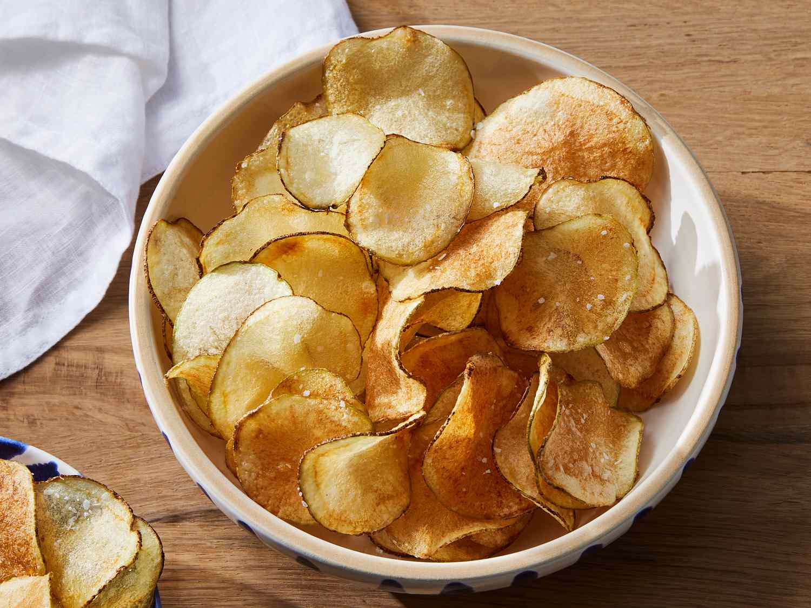

Chips

Homemade potato chips are fun and easy. Guaranteed they won't last long! A food processor with a slicing attachment is very helpful for slicing the potatoes.
Experiment with the thickness; you may like them thicker or thinner. I like to use olive oil for frying, but you can use safflower, corn, or peanut oil as well as vegetable oil.
To start making this, slice potato into chips. Then, transfer them into coldwater to be drained and rinsed repeatedly. Fry the potato chips in oil and finally,
season them with salt and serve in a bowl to be enjoyed!
-
Slice the potatoes, followed by transfering them to a large bowl of cold water
-
Drain slices and rinse under cold water. Refill the bowl with water, add 3 tablespoons salt, and put slices back in the bowl.
Let potatoes soak in the salty water for at least 30 minutes. Drain and rinse slices again, then pat dry.
-
Heat oil in a deep-fryer to 365 degrees F (185 degrees C). Working in small batches, fry potato slices until golden.
Remove with a slotted spoon and drain on paper towels. Continue until all of the slices are fried.
-
Season potato chips with salt if required. Finally, serve and enjoy!